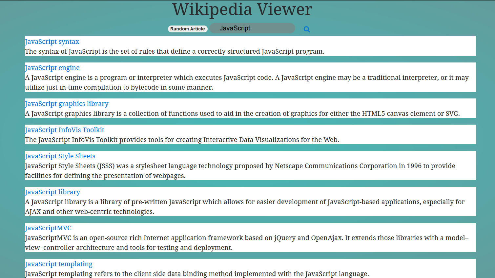
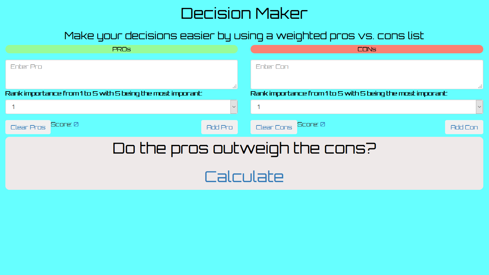

Portfolio
Wikipedia Viewer
I created this Wikipedia Viewer as part of Free Code Camp's Intermediate Front-End Development challenges. A user can search for any term and this viewer will show links to relevant wikipedia entries as well as previews to the articles. This project solidified my understanding of using JSONP.
Random Quote Machine

I created this Random Quote Machine as part of Free Code Camp's Intermediate Front-End Development challenges. A user can press a button to recieve a random quote and then press another button to tweet that quote. This project was my first time working with an API.
Decision Maker
My first project after learning basic JavaScript. Decision Maker takes user input and creates a weigted pros vs cons list to assist in the decision making process. The inspiration for this project came as I was doing the "Interactive Website:Status Update" module on codecademy. I drew from the basic skills that I learned in this module of adding buttons and forms along with the javascript associated with them.